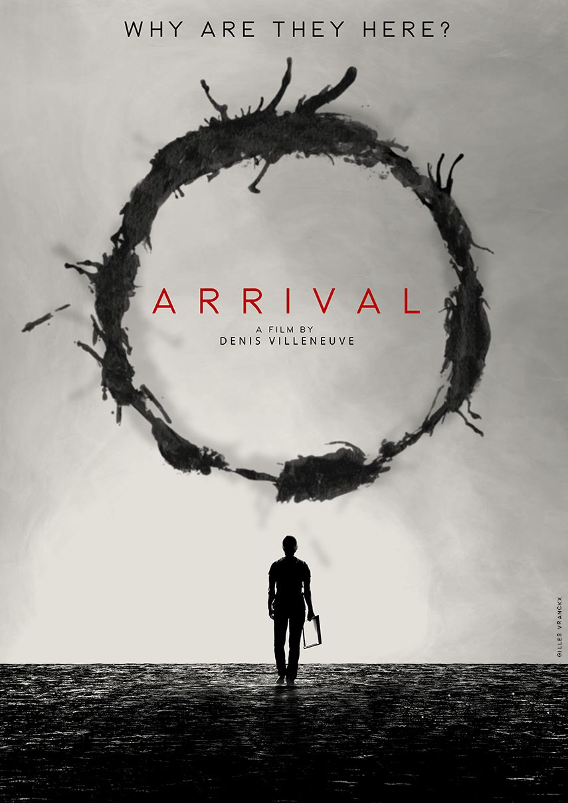

I am a Software Engineer at Databricks in San Francisco. I
graduated from the University of California, Berkeley with a
Master's degree in Electrical Engineering and Computer Science
with a concentration in machine learning applications to speech
processing and a minor in Mechanical Engineering.
I grew up in the Bay Area and now live in San Francisco. My
interests lie in space and biotech, exploring our human limits.
Current Adventures
What I'm into these days:
SoccerVolleyballMoviesBooksPhotographyBaking
Portfolio
Here are some of the projects I've worked on over the years.
Databricks
August 2023 - Present
As a Software Engineer at Databricks, I develop the cloud storage
and credentials infrastructure powering enterprise data platforms
globally. I built an automated multi-cloud blob storage
provisioning system managing 1,000,000+ buckets and 500+ TB of
customer data across 100k+ users, and designed a scalable cloud
credential management system enabling secure cross-region,
cross-cloud data access for 10,000+ enterprise workspaces. Through
comprehensive monitoring and rigorous change management, we've
achieved 99.9999% service uptime.
Berkeley Artificial Intelligence Research
September 2022 - May 2024
As a Graduate Student Researcher in the Berkeley Speech Group, my
Master's research focused on Differentiable Digital Signal
Processing for articulatory synthesis—teaching computers to model
how human vocal tracts produce speech. I developed a novel
real-time ML model requiring only 0.4M parameters (vs. 9M
baseline), improving Word Error Rate by 1.63% (to 6.67%) and Mean
Opinion Score by 0.16 (to 3.74) while achieving 4.9x inference
speedup on CPU.
As part of the mechanical subteam at Space Technologies at Cal, I
worked on a four-year mission to send quantum gyroscopes into
space for the first time. I designed the CubeSat structure and
deployment mechanism, integrating quantum gyroscope payloads and
sensors while using SolidWorks to simulate and stress-test
designs. After years of work, QubeSat successfully launched as
part of NASA's ELaNa 41 mission.
As a Software Engineer Intern at SpaceX, I designed and
implemented critical test infrastructure for satellite hardware
torque and energy margin verification. I developed a spectral
analysis system using Short-Time Fourier Transform (STFT) to
detect reaction wheel bearing faults before they became flight
risks, reducing test time by 10x.
Amazon Web Services
July 2021 - October 2021
As an SDE Intern at AWS, I worked on AWS Marketplace, architecting
and implementing full-stack tooling to automate ML product private
offer creation. I built RESTful APIs with database integration and
established a robust CI/CD pipeline with automated testing.
MIT Lincoln Laboratory
May 2021 - July 2021
As a Research Intern, I led the design and construction of a
custom 4-antenna array system for tracking Lincoln Experimental
Satellites (LES). By developing and optimizing a Blind Adaptive
Beamforming algorithm, I improved signal-to-noise ratio by 30%.
Ultima Genomics
May 2020 - May 2021
As an Engineering Intern, I worked on optical systems for DNA
sequencing instruments. I developed instrument control software in
Python that automated optical system calibration and alignment,
and built a data processing pipeline integrating multiple sensors
and hardware interfaces.
Berkeley Lab
December 2019 - January 2021
As a Software Research Assistant at Lawrence Berkeley National
Laboratory, I developed an automated testing framework in
Python/MATLAB that reduced experiment runtime by 90% for
nitrogen-vacancy center research in diamond for nuclear magnetic
resonance experiments.
Mood for Zoom
Spring 20202nd Place - LA Hacks
During quarantine, professors lost the ability to "read the room"
over Zoom, so we built Mood for Zoom—a real-time aggregate mood
visualization tool using Google Cloud Vision API. Won 2nd Place
Overall and an honorable mention for Best Use of Machine Learning.
A tool that scrapes senate.gov to visualize voting patterns and
party loyalty, making congressional voting records more
transparent and accessible. Built with Beautiful Soup, Python, and
jQuery/JavaScript.
At COSMOS UCSD, I designed a walking robot from scratch with an
insectoid design—circuit design, Raspberry Pi code with Adafruit
PWM drivers, and 3D printed chassis. In the final time-based race,
our robot beat competitors by 50%.
Inspiration
Stories, games, and media that have shaped my thinking.

An incomplete list
A Silent VoiceArrivalCODABefore Your EyesExhalationStories of Your Life and OthersOne Hundred Years of Solitude